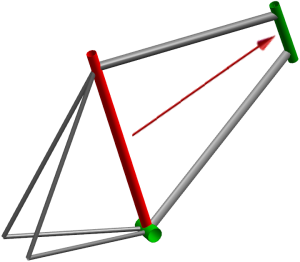

Estimated time to complete: 1–1 minutes
In this activity, you will simultaneously link multiple expressions from one component of a bicycle frame to drive the size of another component.

Open the Create Multiple Interpart Expressions activity.